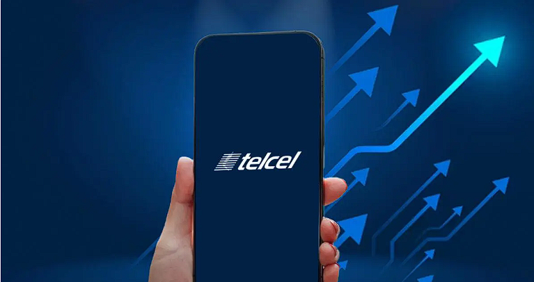

Gerencia Recepción de Infraestructura, Aplicativos y Sistemas VirtualizadosTelcel

MISIÓN
SER LA ENTIDAD QUE RECIBA LA INFRAESTRUCTURA, SISTEMAS VIRTUALIZADOS, APLICACIONES Y SERVICIOS A LOS PROCESOS OPERATIVOS
DE LA SUBDIRECCIÓN DE SISTEMAS PREPAGO Y ADMÓN. DE PLATAFORMA.